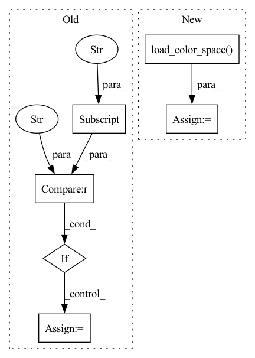

Pattern ID :1767
Before Change
gym_env_name, dataset_dict = load_dataset_magical()
venv = make_vec_env(gym_env_name, n_envs=1, parallel=False)
color_space = ColorSpace.RGB
elif benchmark["benchmark_name"] == "dm_control" :
assert not use_random_rollouts, \
"use_random_rollouts not yet supported for dm_control"
gym_env_name, dataset_dict = load_dataset_dm_control()
venv = make_vec_env(gym_env_name, n_envs=1, parallel=False)
color_space = ColorSpace.RGB
elif benchmark["benchmark_name"] == "atari":After Change
// setup environment & dataset
venv = auto_env.load_vec_env()
color_space = auto_env.load_color_space()
if use_random_rollouts:
dataset_dict = get_random_traj(env=venv,
timesteps=timesteps)
else:In pattern: SUPERPATTERN
Frequency: 3
Non-data size: 6
Instances Fragment ID: 8210748
Project Name: humancompatibleai/eirli
Commit Name: e27cbb99e7f7a03a80d5ff8063b3071bf534edda
Time: 2020-08-13
Author: sam@qxcv.net
File Name: src/il_representations/scripts/run_rep_learner.py
M Class Name: AnonimousClass
N Class Name: AnonimousClass
M Method Name: run(10)
N Method Name: run(10)
M Parent Class:
N Parent Class:
M File Name: src/il_representations/scripts/run_rep_learner.py
N File Name: src/il_representations/scripts/run_rep_learner.py
M Start Line: 92
M End Line: 115
N Start Line: 86
N End Line: 92
Before Change
algo = getattr(algos, algo)
// setup environment
if benchmark["benchmark_name"] == "magical" :
assert not use_random_rollouts, \
"use_random_rollouts not yet supported for MAGICAL"
gym_env_name, dataset_dict = load_dataset_magical()
venv = make_vec_env(gym_env_name, n_envs=1, parallel=False)
color_space = ColorSpace.RGB
elif benchmark["benchmark_name"] == "dm_control":
assert not use_random_rollouts, \
"use_random_rollouts not yet supported for dm_control"
gym_env_name, dataset_dict = load_dataset_dm_control()
venv = make_vec_env(gym_env_name, n_envs=1, parallel=False)
color_space = ColorSpace.RGB
elif benchmark["benchmark_name"] == "atari":
if not use_random_rollouts:
dataset_dict = load_dataset_atari()
gym_env_name_hwc = benchmark["atari_env_id"]
venv = VecTransposeImage(VecFrameStack(
make_atari_env(gym_env_name_hwc), 4))
color_space = ColorSpace.GRAYAfter Change
// setup environment & dataset
venv = auto_env.load_vec_env()
color_space = auto_env.load_color_space()
if use_random_rollouts:
dataset_dict = get_random_traj(env=venv,
timesteps=timesteps)
else: Fragment ID: 8210940
Project Name: humancompatibleai/eirli
Commit Name: 4f43a9030853ed574d23f2e86f5253fc4ccd11de
Time: 2020-08-13
Author: sam@qxcv.net
File Name: src/il_representations/scripts/run_rep_learner.py
M Class Name: AnonimousClass
N Class Name: AnonimousClass
M Method Name: run(10)
N Method Name: run(10)
M Parent Class:
N Parent Class:
M File Name: src/il_representations/scripts/run_rep_learner.py
N File Name: src/il_representations/scripts/run_rep_learner.py
M Start Line: 92
M End Line: 115
N Start Line: 86
N End Line: 92
Before Change
else:
if np.max(img) > 1:
img = normalize_image(img)
if env_cfg["benchmark_name"] == "magical" and img.shape[2] == 12: // For MAGICAL, original img shape is
// [96, 96, 12]
img = np.dsplit(img, 4)
img = np.concatenate(img, axis=1) // frames tiled horizontally
else:
// The images generated by Captum has a wide margin around the graph. If you wish to crop it you can
// uncomment the following line and adjust the number to your preference.
// img = img[50:1150, 100:1100, :]
plt.axis("off")
savefig_kwargs = {"bbox_inches": "tight", "dpi": 150, "pad_inches": 0}
plt.imshow(img)
if save_dir:
plt.savefig(f"{save_dir}/{save_name}.png", **savefig_kwargs)After Change
img = img.detach().numpy()
// Split framestacked image
color_space = auto_env.load_color_space()
n_chans = 3 if color_space == "RGB" else 1
split_img = np.dsplit(img, img.shape[2] // n_chans)
img = np.concatenate(split_img, axis=1)
Fragment ID: 8210833
Project Name: humancompatibleai/eirli
Commit Name: 2a1417a56faf7fab9fc3aaabb6e6208ca3d09208
Time: 2021-03-07
Author: RPC2@users.noreply.github.com
File Name: src/il_representations/scripts/interpret.py
M Class Name: AnonimousClass
N Class Name: AnonimousClass
M Method Name: save_img(4)
N Method Name: save_img(4)
M Parent Class:
N Parent Class:
M File Name: src/il_representations/scripts/interpret.py
N File Name: src/il_representations/scripts/interpret.py
M Start Line: 130
M End Line: 148
N Start Line: 135
N End Line: 161